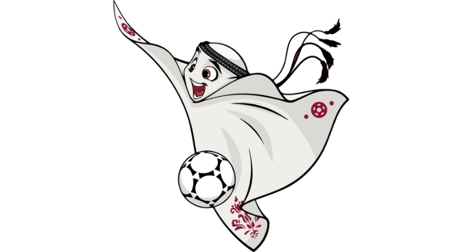

A Copa do Mundo FIFA de 2022 ou o Campeonato Mundial de Futebol FIFA de 2022 é a vigésima segunda edição desse evento esportivo, um torneio internacional de futebol masculino organizado pela Federação Internacional de Futebol, que está ocorrendo no Catar Esta edição é a primeira realizada no Oriente Médio, e é a última a ter o formato de 32 equipes, pois haverá uma mudança no formato e número de equipes na edição seguinte, a de 2026, cujos países-sedes serão Canadá, Estados Unidos e México, passando para 48 equipes. Com sete cidades-sede, o campeonato está sendo disputado entre 20 de novembro e terminará em 18 de dezembro, ao invés do período tradicional devido às altas temperaturas que o país sofre no meio do ano; esta é a primeira vez em que uma Copa do Mundo é disputada no final do ano
O mascote da Copa do Mundo FIFA 2022 foi apresentado durante o sorteio dos grupos, no início do ano, e foi batizado La'eeb – que, de acordo com a organização, significa “jogador super-habilidoso” em árabe. Com a forma inspirada no Keffiyeh, lenço para cabeça característico do Catar, a animação mantém a tradição de incluir elementos regionais dos países-sede nos personagens. "O mascote oficial da Copa do Mundo de 2022 está cheio de energia e vai trazer a alegria do futebol para todos. La’eeb acredita que "Agora é Tudo" e encoraja todos a acreditarem em si mesmos", escreveu a Fifa em sua conta oficial nas redes sociais. “Temos certeza de que os fãs de todos os lugares vão adorar esse personagem divertido e brincalhão. La'eeb desempenhará um papel vital ao envolver torcedores jovens e velhos na experiência da Copa do Mundo do Qatar”, acrescentou Al Mawlawi, vice-diretor geral de marketing, comunicações e experiência em torneios do Comitê Supremo de Entrega e Legado.
